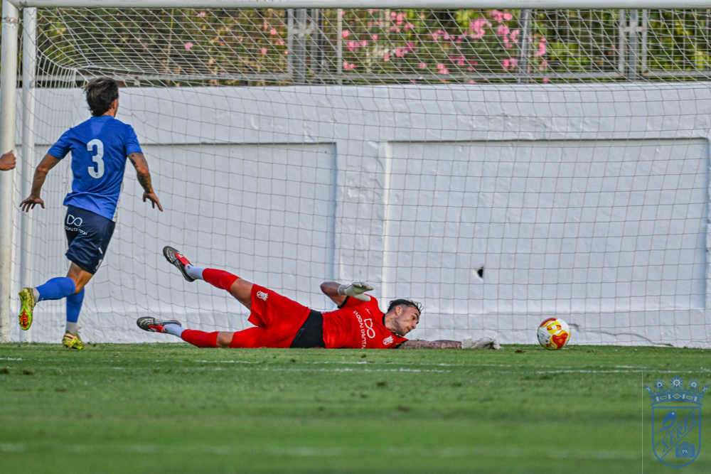

Xerez still weighing up the dugout decision, already preparing for Tenerife B and with the Betis Deportivo kick-off time confirmed

Photo: Diario XerecistaÁngel Rodríguez has been ruled out of the shortlist drawn up by the board, which is now choosing between Abel Gómez and Abel Segovia to lead the team on Sunday at 12:00 against the Canary Islands side, while the kick-off time for the clash with the Betis reserve side, leaders of Segunda RFEF, is already known: Saturday at 18:00
Xerez CD has still not resolved the question mark over its dugout just days before hosting Tenerife B next Sunday at 12:00, in what will be the first league fixture since the dismissal of Xavi Molist. The club has already ruled Ángel Rodríguez out of the shortlist of candidates, so the final decision is now narrowed down to the other two profiles being considered by the board: Abel Gómez and Abel Segovia.
No decision in sight
The club continues to work against the clock to resolve an appointment that looks urgent, given that the new coach would have very few training days before the clash with the Canary Islanders. Despite this, and although time is pressing, the club has not yet confirmed which of the two Abels will finally take the seat on the Xerez bench.
The fixture list offers no respite: leaders Betis Deportivo are next
Aside from the uncertainty in the dugout, the kick-off time has also been confirmed for the match that will pit the Jerez side against, without a doubt, the most in-form team in Group 4: Betis Deportivo, the green-and-white reserve side that sits clear at the top of the division, in a fixture that will be played on Saturday at 18:00.
It is striking that, in both Segunda RFEF and Tercera RFEF, Real Betis Balompié's two reserve sides currently occupy first place in their respective groups, and with an identical number of points, a curious coincidence that reflects the high level of performance both Betis academy teams are showing at the start of the season.
A demanding stretch of fixtures
Xerez CD therefore faces a double challenge in the coming weeks: resolving the dugout situation as soon as possible so as not to lose any more adaptation time, and doing so with an eye on a fixture list that offers no respite, with the visit of Tenerife B on Sunday at 12:00 and the trip to leaders Betis Deportivo at the Ciudad Deportiva Luis del Sol the following Saturday at 18:00, two acid tests for a team that needs to react as soon as possible in the table.
🇪🇸 Leer en español ← Back to home